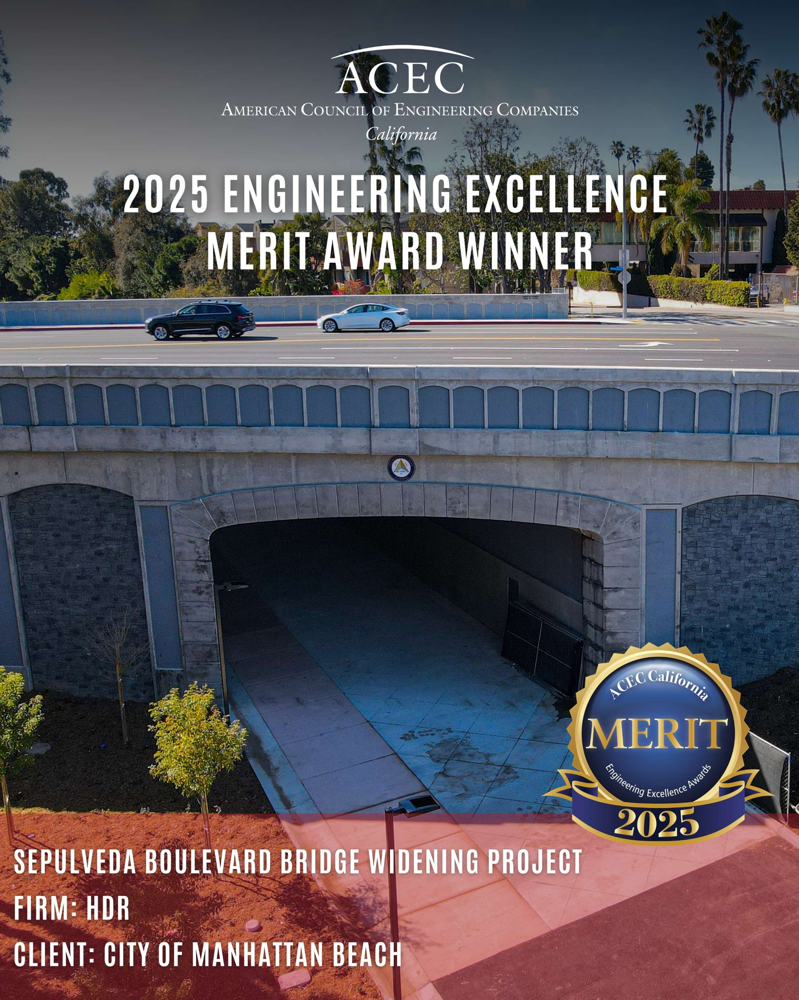

Manhattan Beach Sepulveda Bridge Widening Project
The City of Manhattan Beach initiated the Sepulveda Boulevard Bridge Widening Project to reduce northbound traffic congestion, improve pedestrian access, and upgrade the bridge to...
Open Project